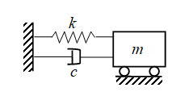
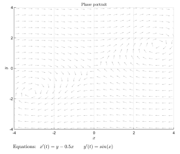
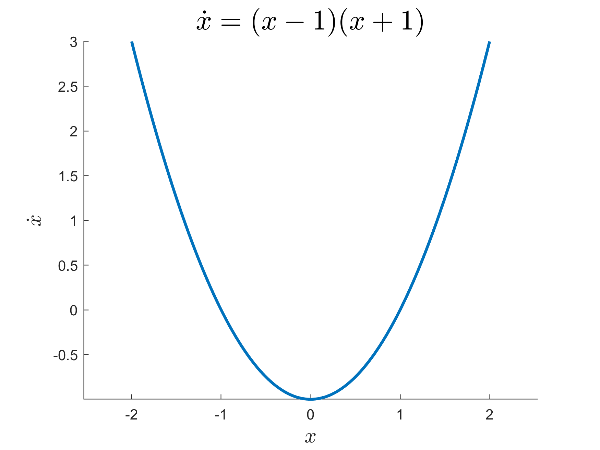
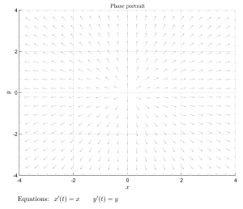
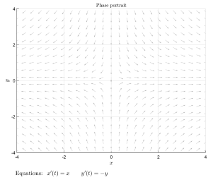
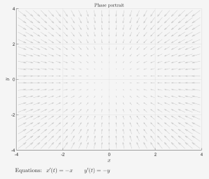
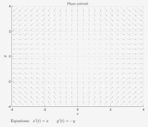
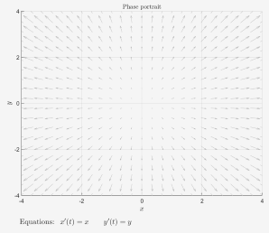
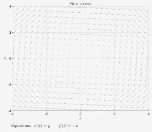
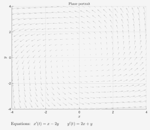

现代控制理论基础¶
一、状态空间¶
1.1 理论¶
- 在用状态空间法分析系统时，系统的动态特性是用由状态变量构成的一阶微分方程组来描述的
- 状态变量：一个系统可以用最小个数的一组变量为状态变量
- 状态矢量：如果\(n\)个状态变量用\(x_1(t), x_2(t), \cdots , x_n(t)\)表示，并把这些状态变量看作是矢量\(x(t)\)的分量，则\(x(t)\)称为状态矢量
\[
x(t) = \begin{pmatrix}
x_1(t)\newline
x_2(t)\newline
\vdots \newline
x_n(t) \newline
\end{pmatrix}
\mathrm{或}
x^T(t) = \begin{bmatrix}
x_1(t), & x_2(t), & \cdots , & x_n(t)
\end{bmatrix}
\]
- 状态空间：以状态变量\(x_1(t), x_2(t),\cdots,x_n(t)\)为坐标轴构建的\(n\)维空间，称为状态空间
- 状态方程：由系统的状态变量构成的一阶微分方程组称为系统的状态方程
\[
\dot{x} = Ax+bu
\]
- 输出方程：指定系统输出的情况下，该系统与状态变量间的函数关系，称为系统的输出方程
\[
y = cx
\]
- 状态空间表达式：状态方程和输出方程总和起来，构成对一个系统完整的动态描述称为系统的状态空间表达式
\[
\begin{matrix}
\dot{x}_1 = a_{11}x_1 + a_{12}x_2 + \cdots + a_{1n}x_n + b_1u\newline
\dot{x}_1 = a_{11}x_1 + a_{12}x_2 + \cdots + a_{1n}x_n + b_1u\newline
\vdots \newline
\dot{x}_1 = a_{11}x_1 + a_{12}x_2 + \cdots + a_{1n}x_n + b_1u\newline
\end{matrix}
\]
\[
\begin{matrix}
\dot{x} = Ax+bu\newline
y = cx
\end{matrix}
\]
- 其中，\(x = \begin{pmatrix} x_1 \newline x_2 \newline \vdots \newline x_n \end{pmatrix}\)为\(n\)维状态矢量;
- \(A = \begin{pmatrix} a_{11} & a_{12} & \cdots & a_{1n}\newline a_{21} & a_{22} & \cdots & a_{2n}\newline \cdots & \cdots & & \cdots\newline a_{n1} & a_{n2} & \cdots & a_{nn}\newline \end{pmatrix}\)为系统内部状态的联系，称为系统矩阵，为\(n\times n\)方阵;
- \(b = \begin{pmatrix} b_1 \newline b_2 \newline \vdots \newline b_n \end{pmatrix}\)为输入对状态的作用，称为输入矩阵或控制矩阵，这里为\(n\times 1\)的矩阵
- \(c = \begin{pmatrix} c_1, & c_2 & \cdots & c_n \end{pmatrix}\)为输出矩阵，这里是\(1\times n\)的矩阵
1.2 例子¶

以弹簧阻尼系统为例子，根据牛顿第二定律可以得到
\[
\begin{matrix}
m\ddot{x} = f(x) - f_k - f_B \newline
m\ddot{x} + B\dot{x} + kx = f(t)
\end{matrix}
\]
- 在经典控制理论中，使用
Laplace Transform进行表达
\[
\begin{matrix}
ms^2X(s) + BsX(s) + kX(s) = F(s)\newline
G(x) = \frac{X(s)}{F(s)} = \frac{1}{ms^2 + Bs + k}
\end{matrix}
\]
- 在现代控制理论中，利用
state-space来表示，利用输入、输出、状态变量的集合构成的微分方程来描述，对于二阶微分方程，需要两个状态变量来表征这个系统
\[
\begin{cases}
z_1 = x\newline
z_2 = \dot{x}
\end{cases}
\Rightarrow
\begin{cases}
\dot{z}_1 = \dot{x} = z_2\newline
\dot{z}_2 = \ddot{x}
\end{cases}
\]
代入上面的式子有
\[
\begin{cases}
\dot{z}_1 = z_2\newline
\dot{z}_2 = \frac{f(t)}{m} - \frac{k}{m}z_1 - \frac{B}{m}z_2 - f(t)
\end{cases}
\]
写成矩阵的形式有
\[
\begin{bmatrix}
\dot{z}_1 \newline
\dot{z}_2 \newline
\end{bmatrix} = \begin{bmatrix}
0 & 1\newline
-\frac{k}{m} & -\frac{B}{m}
\end{bmatrix} = \begin{bmatrix}
z_1 \newline
z_2
\end{bmatrix} + \begin{bmatrix}
0 \newline
\frac{1}{m}
\end{bmatrix} \begin{bmatrix}
u(t)
\end{bmatrix}
\]
系统状态随着时间变化有
\[
y = \begin{bmatrix}
1 & 0
\end{bmatrix} \begin{bmatrix}
z_1 \newline
z_2
\end{bmatrix} + \begin{bmatrix}
0
\end{bmatrix} \begin{bmatrix}
u(t)
\end{bmatrix}
\]
1.3 状态空间方程和拉普拉斯变换的关系¶
\[
\begin{cases}
\dot{z} = Az + Bu\newline
y = cz + Du
\end{cases} \rightleftarrows
G(s) = \frac{X(s)}{F(s)} = \frac{Y(s)}{u(s)} = \frac{1}{ms^2 + Bs + k}
\]
针对状态空间方程进行拉普拉斯变换，可以得到
\[
\begin{matrix}
\begin{cases}
\mathcal{L}(\dot{z}) = \mathcal{L}(Az + Bu) \newline
sZ(s) = AZ(s) + BU(s) \newline
(sI -A)Z(s) = BU(s) \newline
Z(s) = (sI-A)^{-1}BU(s)
\end{cases} & \begin{cases}
\mathcal{L}(y) = \mathcal{L}(cz+Du)\newline
Y(s) = cZ(s) + DU(s)
\end{cases}
\end{matrix}
\]
\[
\begin{matrix}
Y(s) = c(sI-A)^{-1}BU(s) + DU(s) \newline
G(s) = \frac{Y(s)}{U(s)} = c(sI - A)^{-1}B + D
\end{matrix}
\]
先求解一下\((sI - A)^{-1}\)的数值
\[
sI-A = \begin{bmatrix}
s & 0 \newline
0 & s
\end{bmatrix} - \begin{bmatrix}
0 & 1 \newline
-\frac{k}{m} & -\frac{B}{m}
\end{bmatrix} = \begin{bmatrix}
s & -1 \newline
\frac{k}{m} & s + \frac{B}{m}
\end{bmatrix}
\]
\[
(sI-A)^{-1} = \frac{(sI-A)^*}{|sI-A|} = \frac{\begin{bmatrix}
s+\frac{B}{m} & 1\newline
-\frac{k}{m} & s
\end{bmatrix}}{s(s + \frac{B}{m})+ \frac{k}{m}} = \frac{\begin{bmatrix}
s+\frac{B}{m} & 1\newline
-\frac{k}{m} & s
\end{bmatrix}}{s^2 + \frac{B}{m}s+\frac{k}{m}}
\]
\[
c(sI-A)^{-1}B = \begin{bmatrix}
1 & 0
\end{bmatrix} \frac{\begin{bmatrix}
s+\frac{B}{m} & 1\newline
-\frac{k}{m} & s
\end{bmatrix}}{s^2 + \frac{B}{m}s+\frac{k}{m}} \begin{bmatrix}
0 \newline
\frac{1}{m}
\end{bmatrix}
\]
\[
c(sI-A)^{-1}B = \frac{1/m}{s^2+\frac{B}{m}s+\frac{k}{m}} = G(s)
\]
1.4状态空间方程的解¶
考虑下面的式子
\[
\begin{cases}
\dot{x}_1(t) = x_1(t) + x_2(t)\newline
\dot{x}_2(t) = 4x_1(t) - 2x_2(t)
\end{cases} \Rightarrow \frac{\mathrm{d}\vec{x}}{\mathrm{d}t} = A \vec{x}
\]
其中\(A = \begin{bmatrix} 1 & 1\newline 4 & -2 \end{bmatrix}\)
类比高等数学当中的求解一阶微分方程的方法，可以得到
\[
\vec{x}(t) = e^{At}\vec{x}(0)
\]
根据常识可以看出来\(e^{At}\)是一个\(n\times n\)的矩阵，从泰勒级数的方式来考虑
\[
e^{at} = 1 + at + \frac{1}{2!}(at)^2 + \frac{1}{3!}(at)^3 + \cdots + \frac{1}{n!}(at)^n
\]
\[
e^{At} = 1 + At + \frac{1}{2!}(At)^2 + \frac{1}{3!}(At)^3 + \cdots + \frac{1}{n!}(At)^n
\]
- 若\(A = 0\)，则\(e^{AT}=I\)
- 若\(A = \begin{bmatrix} \lambda_1 & & & \newline & \lambda_2 & & \newline & & \ddots & \newline & & & & \lambda_n \newline \end{bmatrix}\)，则\(e^{At} = \begin{bmatrix} e^{\lambda_1t} & & & \newline & e^{\lambda_2t} & & \newline & & \ddots & \newline & & & & e^{\lambda_nt} \newline \end{bmatrix}\)
- 若\(A = P\Lambda P^{-1}\)，则\(e^{At}=Pe^{\Lambda t}P^{-1}\)
求解状态空间方程的解
\[
\frac{\mathrm{d}\vec{x}(t)}{\mathrm{d}t} = A\vec{x}(t) + B\vec{u}(t)
\]
\[
e^{-At}\frac{\mathrm{d}\vec{x}(t)}{\mathrm{d}t}-Ae^{-At}\vec{x}(t) = e^{-At}B\vec{u}(t)
\]
\[
\int^t_{t_0} \frac{\mathrm{d}(e^{-A\tau}\vec{x}(\tau))}{\mathrm{d}\tau} \mathrm{d}\tau= \int^t_{t_0} e^{-A\tau}B\vec{u}(\tau)\mathrm{d}\tau
\]
\[
e^{-A\tau}\vec{x}(\tau)|^t_{t_0} = \int^t_{t_0} e^{-A\tau}B\vec{u}(\tau)\mathrm{d}\tau
\]
\[
e^{-At}\vec{x}(t) = e^{-At_0}\vec{x}(t_0) + \int^t_{t_0} e^{-A\tau}B\vec{u}(\tau)\mathrm{d}\tau
\]
\[
\vec{x}(t) = e^{A(t-t_0)}\vec{x}(t_0) + \int^t_{t_0}e^{A(t-\tau)}B\vec{u}(\tau)\mathrm{d}\tau
\]
- 第一项称为状态转移矩阵，其中\(A\)的特征值反应了这一项随着时间变化的趋势，如果所有的特征值均小于零，则有这一项最终变为零，这个是分析系统稳定性的一个方法
二、相图相轨迹¶
相图和相轨迹Phase Portrait是一种通过直观的图形分析微分方程，特别是微分方程的方法。
例如此式子的相图相轨迹为 $$ \begin{cases} \dot{x}_1 = x_2 - 0.5 x_1\ \dot{x}_2 = \sin x_1 \end{cases} $$

分析一维情况利用下面的例子来举例子

- 可以看到当\(x = \pm1\)的时候，\(\dot{x} = 0\)
- 当\(x< -1\)的时候，会逐渐靠近\(x\rightarrow-1\)
- 当\(-1 < x < 1\)的时候，会逐渐靠近\(x\rightarrow -1\)
- 当\(x > 1\)的时候，会逐渐靠近\(x\rightarrow + \infty\)
- 所以\(x = -1\)是稳定点，\(x = 1\)是不稳定点
分析二维的情况
\[
\dot{x} = A x + Bu
\]
令\(u = 0\)
\[
\frac{\mathrm{d}}{\mathrm{d}t} \begin{bmatrix}
x_1 \\
x_2
\end{bmatrix} = \begin{bmatrix}
a & b\\
c & d\\
\end{bmatrix} \begin{bmatrix}
x_1 \\
x_2\\
\end{bmatrix}
\]
则有
$$ \begin{cases} \dot{x}1 = ax_1\ \dot{x}_2 = dx_2\ \end{cases} \begin{cases} x = 0\ x_{20} = 0\ \end{cases}
$$
- case1:\(a=d>0\)
- \((0,0)\)点叫做
source,是unstable不稳定点

- case2:\(a > 0, d < 0\)
- \((0,0)\)点叫做
saddle

- case3：\(a,d < 0\)
- \((0,0)\)点叫做
sink，是stable稳定点

进行一般形式的分析
\[
\dot{x} = Ax
\]
\[
\begin{matrix}
x = py\\
\dot{y} = \Lambda y
\end{matrix}
\]
- \(x\)的特征值决定了他的
2.1总结¶
\[
\begin{cases}
\lambda_1 = a_1 + b_1i\\
\lambda_2 = a_2 + b_2i
\end{cases}
\]
- 当\(a_1,a_2<0,b_1 = b_2 = 0\)，是
stable

- 当\(a_1 > 0,a_2 < 0, b_1 = b_2 = 0\)，是
saddle

- 当\(a_1,a_2>0,b_1 = b_2 = 0\)，是
unstable

- 当\(a_1 = a_2 = 0\)，是
center

- 当\(a_1,a_2>0\),是
unstable

- 当\(a_1,a_2<0\)，是
stable

三 系统的可控性¶
- 有一个离散系统
\[
\begin{array}{ll}
x_{k+1} &= Ax_k+Bu_k\\
x_1 &= Ax_0+Bu_0 = Bu_0\\
x_2 &= Ax_1 + Bu_1 = ABu_0+Bu_1\\
x_3 &=Ax_2+Bu_2 = A^2Bu_0+ABu_1+Bu_2\\
\vdots\\
x_n &= Ax_{n-1}+Bu_{n-1} = A^{n-1}Bu_0+\cdots+ABu_{n-2}+Bu_{n-1}
\end{array}
\]
\[
x_n = \begin{bmatrix}
B & AB & \cdots & A^{n-1}B
\end{bmatrix} \begin{bmatrix}
u_{n-1}\\
u_{n-2}\\
\vdots\\
u_0
\end{bmatrix} = Co \times u
\]
其中
\[
\begin{matrix}
A \in R^{n\times n}\\
B \in R^{n\times r}\\
Co \in R^{n\times nr}\\
\end{matrix}
\]
若\(u\)有解，则
\[
Rank(Co) = n
\]
四 系统的稳定性¶
4.1 稳定性的定义¶
李雅普诺夫意义下的稳定性（Stability in the Sense of Lyapunov）
- 如果平衡点\(z_f = 0\)满足
\[
\forall t_0, \forall \varepsilon >0,\exists \delta (t_0, \varepsilon):\parallel z(t_0) \parallel < \delta(t_0, \varepsilon) \rightarrow \forall t \geq t_0, \parallel z(t) < \varepsilon
\]